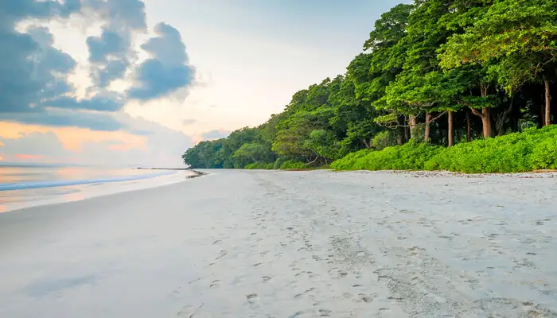
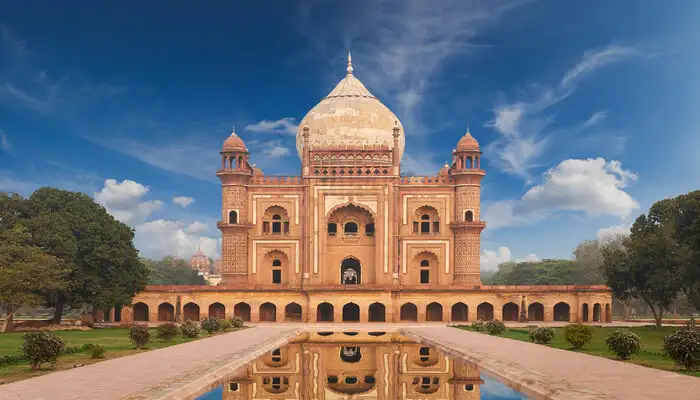
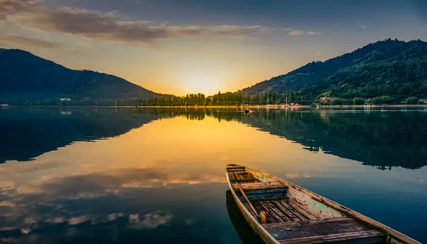
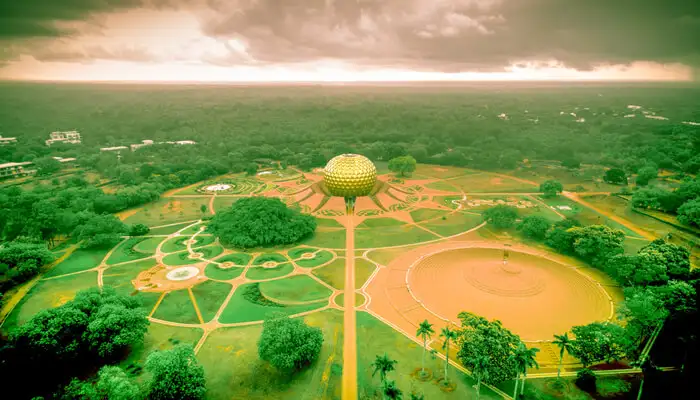
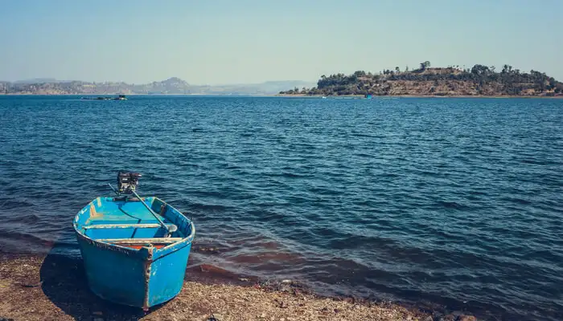
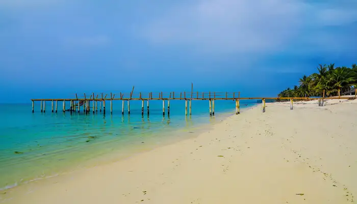
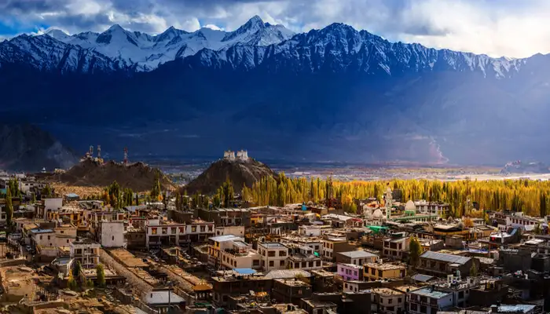

Andaman & Nicobar Islands
Location: Located in the Bay of Bengal.
Cellular Jail: The Cellular Jail in Port Blair, known as "Kala Pani," was used by the British to exile political prisoners during India's struggle for independence.

Territory Of Delhi
Capital: Delhi serves as the capital of India.
Historical Significance: Delhi is rich in historical landmarks, including the Red Fort, Qutub Minar, and India Gate, reflecting its historical importance.

Jammu And Kashmir
Jammu and Kashmir is known for its diverse geography.
It encompasses the snow-capped Himalayan mountains, lush valleys, and arid desert terrain in Ladakh.
The region's diverse landscapes and climate zones make it a unique and picturesque destination for tourists and adventurers alike, attracting visitors from around the world.

Pondicherry
French Influence: Puducherry has a distinct French influence in its culture and architecture due to its colonial history.
Auroville: Auroville, an experimental township within Puducherry, promotes international unity and cultural diversity.
Chandigarh`
Planned City: Chandigarh is a well-planned city and serves as the capital of both Punjab and Haryana.
Architecture: The city is known for its modernist architecture, and it was designed by Swiss-French architect Le Corbusier.

Dadra & Nagar and Daman & Diu
Merger: These two Union Territories were merged into one on January 26, 2020.
Location: They are located on the western coast of India, near Gujarat, and are known for their natural beauty.

Lakshadweep
Coral Atolls: Lakshadweep is a group of 36 coral atolls and is known for its stunning coral reefs.
Biodiversity: It is home to a variety of marine life, including fish, turtles, and birds, making it a unique ecological hotspot.

Ladakh
Strategic Location: Ladakh is strategically located in the northernmost part of India and shares borders with China and Pakistan.
Natural Beauty: The region is known for its breathtaking landscapes, including high mountains, lakes, and unique wildlife.